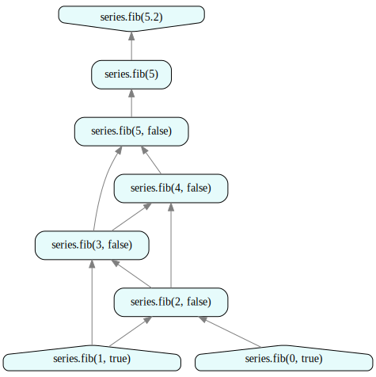
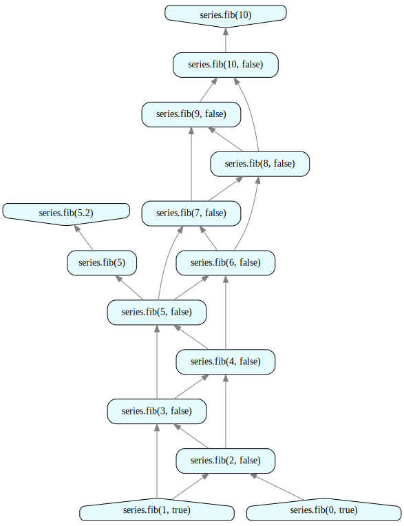
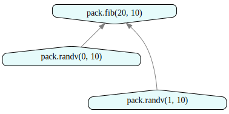
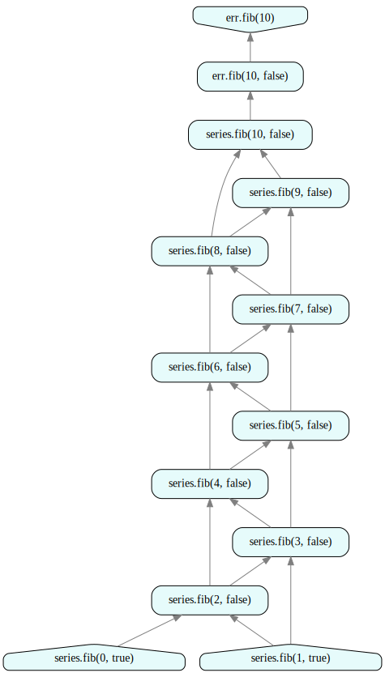

Tutorial 6: Advanced Features
How to use this tutorial
- This tutorial is also available in Jupyter notebook format. To access and run the Jupyter notebook version of the tutorial, please sign up for free developer access at https://juliusgraph.com/user/signup, then go to Julius' developer environment at https://juliusgraph.com.
- Additional resources (video demos & blogs) are available at http://juliustech.co.
- To report bugs or request new features, please raise an issue here. To schedule a live demo, please go to http://juliustech.co. Please email us at info@juliustech.co for other general inquiries.
Introduction
This tutorial covers some advanced features in the Julius Graph Engine:
- Caching
- Cloning of namespaces and Change management
- Packaging rules into an atom
- Error Handling
We use the same Fibonacci sequence example as in the AAD tutorial to illustrate these advanced topics.
# disable the display of information logging
using Base.CoreLogging
disable_logging(CoreLogging.Info)
using GraphEngine: RuleDSL, GraphVM
using GraphEngine.RuleDSL
using GraphIO
# start data server for web UI
gss = Dict{String,RuleDSL.AbstractGraphState}()
port = GraphVM.drawdataport()
@async GraphVM.startresponder(gss, port)Task (runnable) @0x00007f65acfa1e40The following few rules define the Fibonacci sequence using the rule syntax.
@addrules series begin
fib(x::Float64) = Alias(fib(Int(floor(x))))
fib(n::Int) = RuleDSL.Alias(fib(n, Val(n <= 1)))
fib(n::Int, isend::Val{false}) = begin
RuleDSL.WeightedSum[[1.0; 1.0]](
fib(n - 1, Val(n <= 2)), fib(n - 2, Val(n <= 3))
)
end
fib(n::Int, isend::Val{true}) = RuleDSL.Constant[[fill(Float64(n), 1)]]()
end
config = RuleDSL.Config();The following two functions override the nodelabel function for the customized display of graph nodes. Users can freely override them to customize the text label display on the computation graph.
import GraphEngine.RuleDSL: nodelabel
# override displays
function nodelabel(::RuleDSL.AbstractGraphState, r::RuleDSL.RuleNode)
hdr = "$(r.ns).$(r.op[1])"
typestr(x) = x.args[2]
typ = join(typestr.(r.op[2]), ", ")
return hdr * "($typ)"
end
function nodelabel(::RuleDSL.AbstractGraphState, ref::RuleDSL.NodeRef)
hdr = "$(ref.ns).$(ref.name)"
ps = join(simplerepr.(ref.params), ", ")
return "$hdr($ps)"
endnodelabel (generic function with 4 methods)We first compute the primal and AAD of a Fibonacci sequence.
fib5 = @ref series.fib(5.2)
fib0 = @ref series.fib(0, Val(true))
fib1 = @ref series.fib(1, Val(true))
cs = RuleDSL.NumericalData(config, Set([fib0, fib1]));
gs = RuleDSL.createlocalgraph(config, cs);
RuleDSL.calcfwd!(gs, Set([fib5]));
RuleDSL.calcback!(gs, Set([hash(fib5)]));We can retrieve the results of $\vec y$ and the 1st order derivatives from AAD.
y = RuleDSL.getys(gs, hash(fib5))
dydx0 = RuleDSL.getyds(gs, hash(fib0), hash(fib5))
dydx1 = RuleDSL.getyds(gs, hash(fib1), hash(fib5))
println("fib5 =", y[1])
println("dfib5_dfib0 =", dydx0[1])
println("dfib5_dfib1 =", dydx1[1])fib5 =[5.0]
dfib5_dfib0 =[3.0]
dfib5_dfib1 =[5.0]
The corresponding computational graph is shown here, and you can click the link below to see it in an interactive web UI.
svg = GraphIO.postlocalgraph(gss, deepcopy(gs), port, true; key="fib5");
GraphIO.postsvg(svg, "adv_1.svg")view graph data at http://127.0.0.1:8080/ui/depgraph.html?dataurl=127.0.0.1:7753_fib5

Figure 1 - Fibonacci with AAD
Caching
Because Julius automatically caches all the intermediate results in the graph, any incremental computation will re-use existing values in the cache, instead of recomputing them from scratch. The following cells show that when computing fib(10), all the nodes up to fib(5) from the previous step are re-used.
fib10 = @ref series.fib(10)
GraphVM.calcfwd!(gs, Set([fib10]));
RuleDSL.calcback!(gs, Set([hash(fib10)]));
y = RuleDSL.getys(gs, hash(fib10))
df10df0 = RuleDSL.getyds(gs, hash(fib0), hash(fib10))
df10df1 = RuleDSL.getyds(gs, hash(fib1), hash(fib10))
println("fib10 =", y[1])
println("dfib10_dfib0 =", df10df0[1])
println("dfib10_dfib1 =", df10df1[1])fib10 =[55.0]
dfib10_dfib0 =[34.0]
dfib10_dfib1 =[55.0]
The corresponding computational graph is shown below:
svg = GraphIO.postlocalgraph(gss, deepcopy(gs), port, true; key="fib10");
GraphIO.postsvg(svg, "adv_2.svg")view graph data at http://127.0.0.1:8080/ui/depgraph.html?dataurl=127.0.0.1:7753_fib10

Figure 2 - Caching
Namespace Clone and Override
Rules are organized within individual namespaces in the Julius RuleDSL. For example the series is a namespace in the rules declaration above. One important feature of Julius is that the rules can be cloned to different namespaces and overridden. This facilitates comparisons between the old and new versions of rules, making change management and impact analysis very simple in practice.
For example, if we update the above Fibonacci sequence definition to take random vectors as fib(0) and fib(1) instead of 0 and 1, we can create a clone of the namespace "series" and override the corresponding rules.
@clone series => vecs
@addrules vecs begin
fib(n::Int, isend::Val{true}) = RuleDSL.Constant[[randn(10)]]()
endvfib10 = @ref vecs.fib(10)
@time GraphVM.calcfwd!(gs, Set([vfib10]));
y = RuleDSL.getys(gs, hash(vfib10))
println("vfib10 =", y[1]) 0.313649 seconds (358.82 k allocations: 20.062 MiB, 99.50% compilation time)
vfib10 =[40.50939848981055, 20.3372041492605, 15.732516368026499, -113.42522218551576, -11.644251624786978, 13.735208123314047, -101.81941691527474, -27.10690904794512, 17.83110502504627, -9.877230151986542]
We can show a side by side comparison of the two versions of the calculation, before and after changing the initial values to random vectors. You can compare the before and after values of individual nodes in the interactive web UI, by clicking the URL below.
svg = GraphIO.postlocalgraph(gss, deepcopy(gs), port, true; key="vecs");
GraphIO.postsvg(svg, "adv_3.svg")view graph data at http://127.0.0.1:8080/ui/depgraph.html?dataurl=127.0.0.1:7753_vecs
Figure 3 - Override & Compare
Packaging
When the computational graph becomes sufficiently large, it can be difficult for a user to navigate and visualize. Julius supports packaged atoms, which uses a set of Rules to define an atom with its own internal computational graph. The packaged atom can then be subsequently referred to by other rules. The iterative layering of rules and packaged atoms allows easy composition of complicated logic and analytics.
The following code cell shows how to create and use a packaged atom, using the macro RuleDSL.@combonquantom. A similar RuleDSL.@combodatom is also provided to create packaged Datom object.
using GraphEngine.RuleDSL: Source
# the first argument must be the config
@comboquantom function Fib[config::RuleDSL.Config, m::Int](fac.xarg(0), fac.xarg(1))
fib(n::Int) = Alias(fib(n, Val(n <= 1)))
fib(n::Int, isend::Val{false}) = begin
RuleDSL.WeightedSum[[1.0; 1.0]](fib(n - 1, Val(n <= 2)), fib(n - 2, Val(n <= 3)))
end
fib(n::Int, isend::Val{true}) = Alias(fac.xarg(n))
return fib(m)
end
@addrules pack begin
randv(id::Int, d::Int) = RuleDSL.Constant[[randn(d)]]()
fib(n::Int, d::Int) = Fib[@config, n](randv(0, d), randv(1, d))
endd = 10
p20 = @ref pack.fib(20, d)
p0 = @ref pack.randv(0, d)
p1 = @ref pack.randv(1, d)
gs = RuleDSL.createlocalgraph(config, RuleDSL.NumericalData())
RuleDSL.calcfwd!(gs, Set([p20]));
RuleDSL.calcback!(gs, Set(hash.(p20)), Set([p0; p1]));
dp20dp0 = RuleDSL.getyds(gs, hash(p0), hash(p20))
dp10dp1 = RuleDSL.getyds(gs, hash(p1), hash(p20))
println("fib20 =", RuleDSL.getys(gs, hash(p20)))
println("dfib20_dfib0 =", dp20dp0[1])
println("dfib20_dfib1 =", dp20dp0[1])fib20 =[[-4124.536049582304, -968.1550041387593, 4944.059377340111, 7844.940820910798, -8196.13595291703, -9139.367481949244, -10156.215233288294, 2365.19847264999, 8946.062644479065, 3138.3764059774153]]
dfib20_dfib0 =[4181.0 0.0 0.0 0.0 0.0 0.0 0.0 0.0 0.0 0.0; 0.0 4181.0 0.0 0.0 0.0 0.0 0.0 0.0 0.0 0.0; 0.0 0.0 4181.0 0.0 0.0 0.0 0.0 0.0 0.0 0.0; 0.0 0.0 0.0 4181.0 0.0 0.0 0.0 0.0 0.0 0.0; 0.0 0.0 0.0 0.0 4181.0 0.0 0.0 0.0 0.0 0.0; 0.0 0.0 0.0 0.0 0.0 4181.0 0.0 0.0 0.0 0.0; 0.0 0.0 0.0 0.0 0.0 0.0 4181.0 0.0 0.0 0.0; 0.0 0.0 0.0 0.0 0.0 0.0 0.0 4181.0 0.0 0.0; 0.0 0.0 0.0 0.0 0.0 0.0 0.0 0.0 4181.0 0.0; 0.0 0.0 0.0 0.0 0.0 0.0 0.0 0.0 0.0 4181.0]
dfib20_dfib1 =[4181.0 0.0 0.0 0.0 0.0 0.0 0.0 0.0 0.0 0.0; 0.0 4181.0 0.0 0.0 0.0 0.0 0.0 0.0 0.0 0.0; 0.0 0.0 4181.0 0.0 0.0 0.0 0.0 0.0 0.0 0.0; 0.0 0.0 0.0 4181.0 0.0 0.0 0.0 0.0 0.0 0.0; 0.0 0.0 0.0 0.0 4181.0 0.0 0.0 0.0 0.0 0.0; 0.0 0.0 0.0 0.0 0.0 4181.0 0.0 0.0 0.0 0.0; 0.0 0.0 0.0 0.0 0.0 0.0 4181.0 0.0 0.0 0.0; 0.0 0.0 0.0 0.0 0.0 0.0 0.0 4181.0 0.0 0.0; 0.0 0.0 0.0 0.0 0.0 0.0 0.0 0.0 4181.0 0.0; 0.0 0.0 0.0 0.0 0.0 0.0 0.0 0.0 0.0 4181.0]
The AAD works automatically across the packaged atoms, as shown in the cell above. The following cell shows that the top level graph is much simpler to visualize using the packaged atom. A user can drill down to the full details of the inner graph of the packaged atom from the interactive web UI by clicking on the URL below.
svg = GraphIO.postlocalgraph(gss, deepcopy(gs), port, true; key="pack");
GraphIO.postsvg(svg, "adv_4.svg")view graph data at http://127.0.0.1:8080/ui/depgraph.html?dataurl=127.0.0.1:7753_pack

Figure 4 - Packaged Atom
Error Handling
The Julius Graph Engine handles errors graciously and gives users clear indications on where the errors arise. The following code creates an exception using the Error Quantom at the back AD stage.
using Test
@clone series => err
@addrules err begin
# parameter 2 in Error create error at ad stage
fib(n::Int, isend::Val{false}) = RuleDSL.Error[2](series.fib(n, isend))
end
efibn = @ref err.fib(10)
xs = Set([@ref series.fib(0); @ref series.fib(1)])
gs = RuleDSL.createlocalgraph(config, RuleDSL.NumericalData())
try
RuleDSL.calcfwd!(gs, Set([efibn]))
RuleDSL.calcback!(gs, Set(hash(efibn)), xs)
catch e
println("error caught: $e")
end0The nodes with errors are highlighted automatically in the interactive web UI under the section "errors in graph".
svg = GraphIO.postlocalgraph(gss, deepcopy(gs), port, true; key="err");
GraphIO.postsvg(svg, "adv_5.svg")view graph data at http://127.0.0.1:8080/ui/depgraph.html?dataurl=127.0.0.1:7753_err

Figure 5 - Error Handling
Manage Rules Upgrades
During the development process, we may need to upgrade certain rules to a newer version, while encouraging existing users to migrate. This can be achieved through the use of warning messages. For example, if we want to retire the series.fib and migrate users to the new version of vecs.fib, a warning message can be generated for existing users on the old rules:
@addrules series begin
fib(n::Int, isend::Val{true}; warn="deprecated, please use vecs.fib instead") = begin
RuleDSL.Constant[[fill(Float64(n), 1)]]()
end
end
efibn = @ref series.fib(10)
gs = RuleDSL.createlocalgraph(config, RuleDSL.NumericalData(Set{UInt}()))
@time RuleDSL.calcfwd!(gs, Set([efibn]));┌ Warning: rule series.fib warning: deprecated, please use vecs.fib instead
└ @ Main.##262 /home/julius/dev/Julius/GraphEngineDev/src/RuleDSL/rulepiler.jl:186
┌ Warning: rule series.fib warning: deprecated, please use vecs.fib instead
└ @ Main.##262 /home/julius/dev/Julius/GraphEngineDev/src/RuleDSL/rulepiler.jl:186
0.122978 seconds (292.76 k allocations: 16.506 MiB, 98.94% compilation time)
After the migration period has ended, we can change the old rules to throw an error and force users to upgrade.
@addrules series begin
fib(n::Int, isend::Val{true}; error="deprecated, please use vecs.fib instead") = begin
RuleDSL.Constant[[fill(Float64(n), 1)]]()
end
end
gs = RuleDSL.createlocalgraph(config, RuleDSL.NumericalData())
try
RuleDSL.calcfwd!(gs, Set([efibn]))
catch e
println("error caught $e")
enderror caught rule series.fib: deprecated, please use vecs.fib instead
This page was generated using Literate.jl.